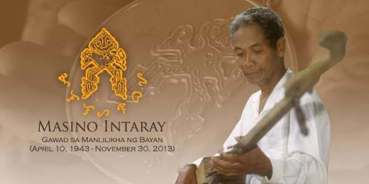
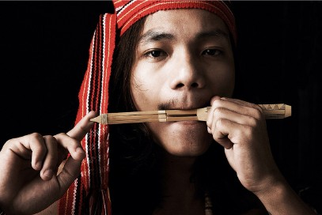
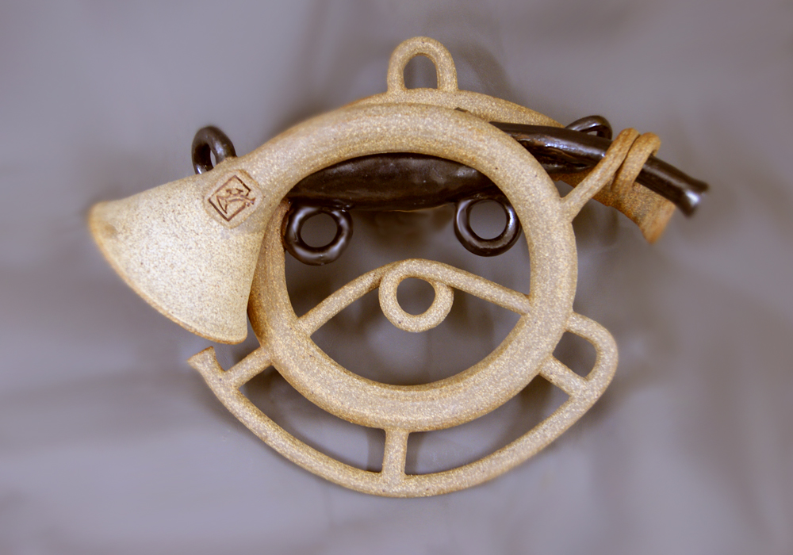
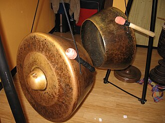
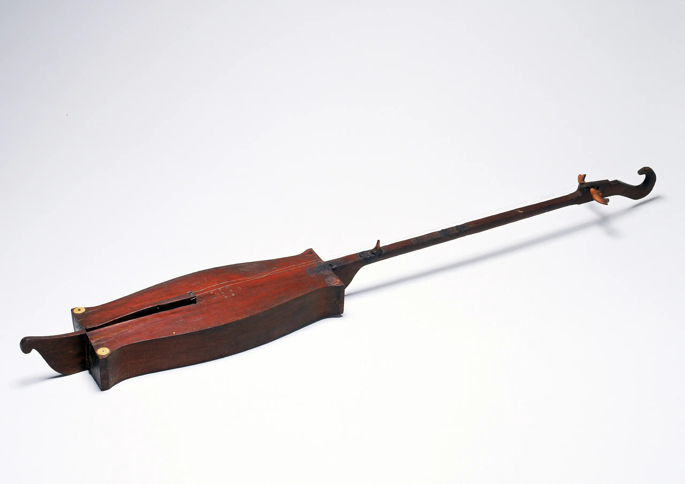
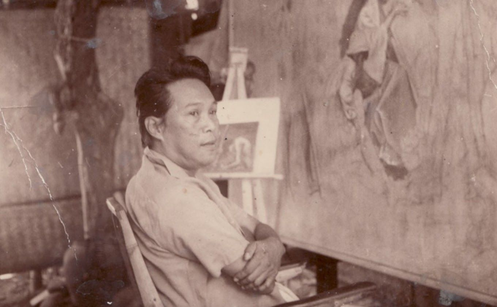
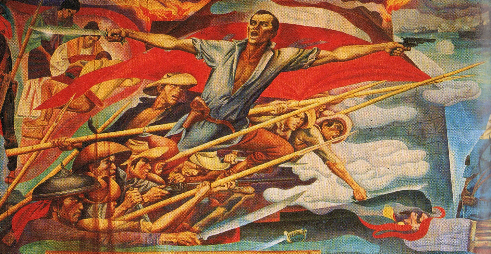
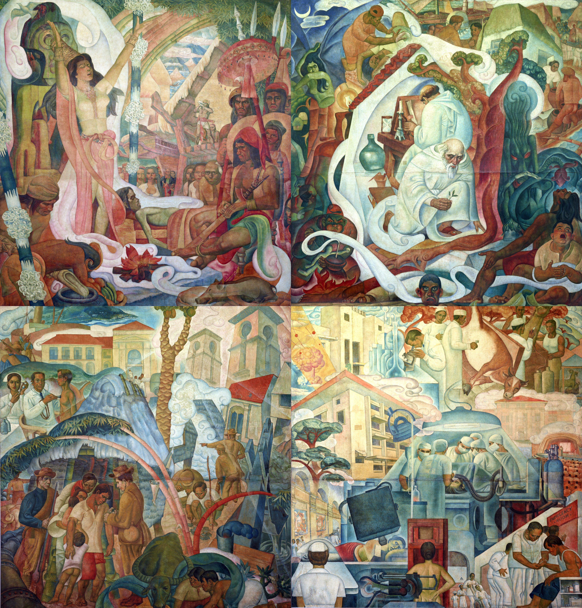
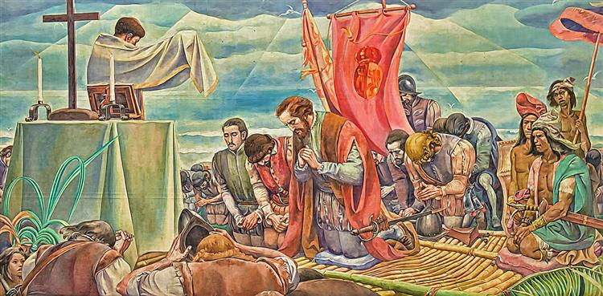

THE ECHOES OF FILIPINO HERITAGE
The Cultural Expressions of Masino Intaray and Botong Francisco
Welcome to our Virtual Exhibition Website!.
Why them?
Different artistic traditions and mediums can preserve cultural heritage and express Filipino identity in their own way
- Cultural tradition
- Indigenous expression
- Music and oral heritage
- Cultural preservation
- Visual art
- Philippine history
- Murals and painting
- Filipino identity
[The exhibition’s purpose and introduce both artists.]
MASINO INTARAY
GAMABA AWARDEE

A — Who He Is
- Biography: Masino Intaray (1943–2013) was a Pala’wan musician, poet, storyteller, and epic chanter who helped preserve the traditional culture and oral literature of his community.
- Birthplace: Makagwa Valley, Brooke’s Point, Palawan
- GAMABA: Awardee in 1993 for his mastery and preservation of Pala’wan traditional arts
- Artistic Field: Traditional music, epic chanting, poetry, storytelling, and oral literature
B — His Art
- Traditional Instruments: Played instruments including the:




- Oral Traditions: Preserved Pala’wan epics, poetry, stories, and traditional knowledge through oral performance.
- Performance: Known for epic chanting, storytelling, and musical performances that could last for hours.
- Cultural Practices: His work reflected Pala’wan beliefs, community traditions, and relationship with nature.
C — Cultural Significance
- Preserving Heritage: His music, stories, and epic chants preserve Pala’wan history, beliefs, and traditions.
- Passing Knowledge: Oral performance allows cultural knowledge and stories to be passed from elders to younger generations.
- Connection to Nature: His songs and stories reflect the Pala’wan people's close relationship with their environment.
- Cultural Identity: His work strengthens Pala’wan identity and helps keep traditional practices alive.
D — Legacy
Masino Intaray helped preserve Pala’wan music, epics, stories, and traditional knowledge. Through his performances, he kept oral traditions alive and passed cultural knowledge to future generations, leaving a lasting connection to Pala’wan identity and heritage.
🎧 LISTEN: SOUNDS OF PALAWAN
[Cultural significance of the music.]
BOTONG FRANCISCO
NATIONAL ARTIST FOR VISUAL ARTS

A — Who He Is
- Biography: Carlos Modesto Villaluz “Botong” Francisco (1912–1969) was a Filipino painter and muralist from Angono, Rizal. With Victorio Edades and Galo Ocampo, he formed the modernist Triumvirate and helped revive mural painting in the Philippines.
- Birthplace: Angono, Rizal, known as the “Art Capital of the Philippines.”
- National Artist recognition: Posthumously named National Artist for Painting in 1973.
- Artistic field: Painting and mural art, particularly large-scale historical murals.
B — His Art
- Murals: Created large-scale works for public spaces, including Manila City Hall and the Philippine General Hospital.
- Paintings: Produced works such as Kaingin and Harana, depicting Filipino life and culture.
- Historical Themes: Depicted important events in Philippine history, connecting historical narratives with national identity.
- Filipino Life: Portrayed bayanihan, serenades, fiestas, village life, customs, and folklore, particularly influenced by his Angono roots.
- Cultural Identity: Combined history, folklore, and Filipino traditions to create a distinctly Filipino form of modern art.
- Distinctive Visual Style: Known for bold colors, rhythmic lines, decorative patterns, foreshortened figures, and strong compositions that moved beyond academic realism.
C — Important Works



[About Botong Francisco's Gallery.]
BEHIND THE EXHIBITION
Part A — Aesthetic Analysis
Masino Intaray
The two musical compositions were selected because they showcase traditional music played with the Kulilal and the cultural heritage of the Palawan people through Masino Intaray’s performances. Rhythm provides structure and gives the music its distinctive character, while movement can be heard through changes in melody and musical patterns. Texture emerges from the combination of different sounds and instruments, creating a rich musical experience. Repetition reinforces traditional musical patterns, making them memorable and helping preserve them through oral transmission. Together, these elements contribute to the compositions’ cultural significance by echoing Palawan traditions, knowledge, and identity and allowing them to be passed down to future generations.
Botong Francisco
Botong Francisco’s works similarly use the elements and principles of art to communicate history and cultural identity. In The Progress of Medicine in the Philippines, earth tones and greens in the first panel suggest native life, while white and green in the second reflect Spanish-introduced medicine. First Mass at Limasawa uses blue and gray to establish a solemn mood. In Filipino Struggles Through History, Francisco’s bold, rhythmic lines and stylized figures create movement across its crowded historical scenes. Layered images create unity, while emphasis falls on central figures such as the priest and Magellan. The smaller scale of the kneeling rulers creates contrast in proportion, directing attention toward the central figures. Francisco’s use of color, line, composition, balance, movement, and proportion creates visually dynamic works that echo Filipino history.
Part B — Curatorial Strategy
- Gallery Sequence
Visitors first meet Masino Intaray’s earthy, sound-led gallery and then Botong Francisco’s bright, visual one, moving from oral tradition to painted history. The comparison comes last so visitors can connect both artists after understanding each one. - Text Panels
Each panel presents key facts in short, labeled sections so visitors can read quickly and easily. This gives visitors context without overwhelming the artworks and instruments they came to see. - Navigation
The exhibition guides visitors through connected rooms using a fixed menu, Back and Next buttons, and a progress bar. The journey introduces Masino Intaray’s oral traditions before exploring Botong Francisco’s painted history, followed by curatorial analysis, comparison, and reflection, helping visitors understand each artist before connecting their contributions to Filipino identity. - Voiceover
Each room features a voiceover button that provides context about the artists, artworks, and their significance to Filipino identity. Instead of repeating on-screen text, the narration offers deeper interpretation while visitors observe the artworks. Starting a new voiceover automatically stops the previous one, keeping narration aligned with the current room. - Music / Ambience
Instrument sounds and soft ambience create a calm, immersive atmosphere that makes visitors feel present in the gallery. This especially supports Masino Intaray’s musical tradition, which is meant to be heard rather than only seen.
Main Purpose
Together, these choices show that the museum's design is intentional. The order of rooms, the progress steps and the guide's voice were each chosen to help visitors understand Filipino culture, not just to present information about two artists.
DIFFERENT MEDIUMS. SHARED PURPOSE.
| Masino Intaray | Botong Francisco |
|---|---|
| Indigenous cultural tradition | Philippine visual history |
| Music and oral tradition | Painting and murals |
| Cultural transmission | Historical storytelling |
| Palawan cultural heritage | Filipino national identity |
| GAMABA Artist | National Artist |
“Different artistic mediums, but a shared purpose.”
- Preserving culture
- Echoing history
- Expressing identity
- Passing knowledge to future generations
- Strengthening appreciation of Filipino heritage
[Two different ways of preserving Filipino culture.]
ART ECHOES WHAT CULTURE CONTINUES.
Art is more than something we see or hear. It echoes stories, preserves traditions, and connects generations. Through Masino Intaray’s music and Botong Francisco’s paintings, we see how Filipino artists can echo our culture and identity through different forms of expression.
Their works remind us that preserving culture and continuing to echo those stories with others.
Thank you for visiting The Echoes of Filipino Heritage.
May the stories, cultures, and traditions you encountered here echo beyond this museum.
[A short reflection.]